FMB819: R을 이용한 데이터분석
Difference-in-Differences
Today’s Agenda
이중차분법 (Differences-in-Differences)
- 시간에 따른 정책 변화가 모든 사람에게 동일하게 영향을 미치지 않는 점을 활용함.
- 적절한 대조군(control group)을 찾아야 하거나 구성해야 함.
- 핵심 가정: 평행 추세 가정 (Parallel Trends Assumption)
- 실증적 적용: 최저임금이 고용에 미치는 영향 분석
Evaluation methods
다중 회귀 분석은 종종 관찰되지 않은 요인에 의한 선택(selection on unobservables) 때문에 인과적 추정치를 제공하지 못함.
RCT(무작위 대조 실험)는 이러한 문제를 해결하는 한 가지 방법이지만, 현실적으로 시행이 불가능한 경우가 많음.
경제학에서 널리 사용되는 네 가지 주요 인과적 평가 방법:
- 도구변수법 (Instrumental Variables, IV),
- 성향 점수 매칭 (Propensity-Score Matching),
- 이중차분법 (Differences-in-Differences, DiD), 및
- 회귀 불연속 설계 (Regression Discontinuity Designs, RDD).
이러한 방법들은 처치(treatment)와 결과(outcome) 간의 __인과 관계__를 식별하는 데 사용됨.
이번 강의에서는 널리 사용되며 엄격한 프로그램 평가 방법인 __이중차분법(Differences-in-Differences)__을 다룰 것임.
Differences-in-Differences (DiD)
DiD의 요구사항
두 개의 시점: 처치 전과 처치 후.
두 개의 그룹:
- 대조군(Control group): 처치를 전혀 받지 않는 집단.
- 처치군(Treatment group): 초기에는 처치를 받지 않다가 이후 완전히 처치를 받는 집단.
특정 가정하에서, 대조군을 처치군의 반사실적(counterfactual) 비교 대상으로 사용할 수 있음.
예제: 최저임금과 고용
최저임금 인상이 (실업을 포함한) 고용에 미치는 인과적 영향을 평가하고자 한다고 가정하자.
하지만 이는 단순하지 않음. 적절한 대조군은 무엇이어야 할까?
노동경제학자 데이비드 카드(David Card)와 앨런 크루거(Alan Krueger)의 1994년 대표 논문 (링크)
- 논문 제목: “최저임금과 고용: 뉴저지와 펜실베이니아 패스트푸드 산업 사례 연구”
이 연구는 최저임금 인상이 패스트푸드 산업의 고용률에 미치는 영향을 추정함. 왜 하필 이 산업을 선택했을까?
제도적 배경
미국에는 연방 최저임금이 있지만, 각 주는 이를 다르게 설정할 수 있음.
1992년 4월 1일: 뉴저지의 최저임금이 시간당 $4.25에서 $5.05로 인상됨.
반면, 인접한 펜실베이니아는 최저임금을 변경하지 않음.
펜실베이니아와 뉴저지는 매우 유사함: 제도, 생활습관, 소비자, 소득 수준, 기후 등 많은 면에서 비슷함.
Card and Krueger (1994): 방법론
뉴저지(NJ)와 동부 펜실베이니아의 패스트푸드점 410곳을 조사함.
조사 시점:
- 뉴저지 최저임금 인상 전 조사: 1992년 2~3월
- 뉴저지 최저임금 인상 후 조사: 1992년 11~12월
연구자들은 어떤 비교를 수행했을까?
좀 더 자세히 데이터를 살펴보자
# A tibble: 6 × 6
sheet chain state observation empft emppt
<chr> <chr> <chr> <chr> <dbl> <dbl>
1 46 bk Pennsylvania February 1992 30 15
2 49 kfc Pennsylvania February 1992 6.5 6.5
3 506 kfc Pennsylvania February 1992 3 7
4 56 wendys Pennsylvania February 1992 20 20
5 61 wendys Pennsylvania February 1992 6 26
6 62 wendys Pennsylvania February 1992 0 31 Task 1
10:00 - 데이터셋을 살펴보고 변수 목록을 확인하라. 변수 정의는
?njmin을 사용하여 확인하라.
state및 설문조사 시점(observation)별로 매장의 개수를 표로 정리하라. 해당 결과가 논문의 표 1과 일치하는지 확인하라.카드와 크루거(1994)의 방식에 따라, 정규직 상당(full-time equivalent, FTE) 고용 변수를 생성하라.
empfte변수를 정의하고 다음 식을 사용하라:empfte = empft + 0.5 * emppt + nmgrs여기서
empft는 정규직 직원 수,emppt는 시간제 직원 수,nmgrs는 매니저 수를 의미함.state및 설문조사 시점(observation)별로 다음 지표들의 평균을 계산하라.- FTE 고용 인원 수
- 정규직 직원 비율(FTE 직원 대비 정규직 비율)
- 평균 초봉(
wage_st) 계산한 결과를 논문의 표 2와 비교하라.
최저임금 인상 전, 뉴저지와 펜실베이니아의 패스트푸드점에는 어떤 차이가 있었는가?
Card and Krueger DiD: 결과
뉴저지 최저임금 인상 전후 평균 고용
| Variables | Pennsylvania | New Jersey |
|---|---|---|
| FTE employment before | 23.33 | 20.44 |
| FTE employment after | 21.17 | 21.03 |
| Change in mean FTE employment | -2.17 | 0.59 |
DiD 추정치
이중차분(DiD) 인과 추정치: \(0.59 - (-2.17) = 2.76\)
해석: 최저임금 인상은 매장당 평균 FTE 고용 증가를 2.76명 초래함.
이중차분(DiD)의 핵심 개념은 이처럼 간단함! 😃
이제 이러한 결과를 그래픽으로 살펴보자.
DiD 그래프로 표현
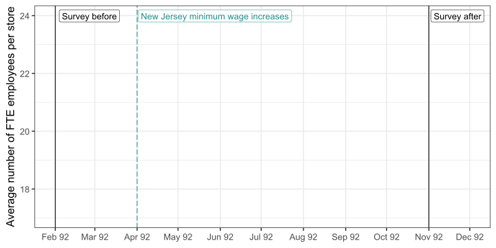DiD 그래프로 표현
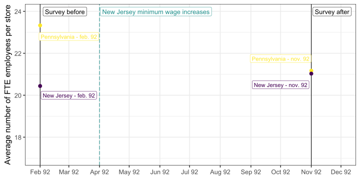DiD 그래프로 표현
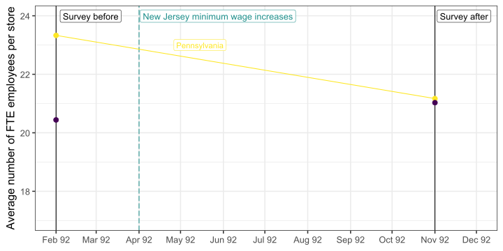DiD 그래프로 표현
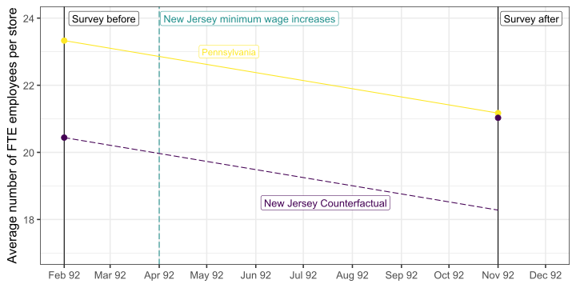DiD 그래프로 표현
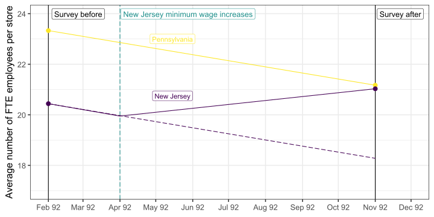DiD 그래프로 표현
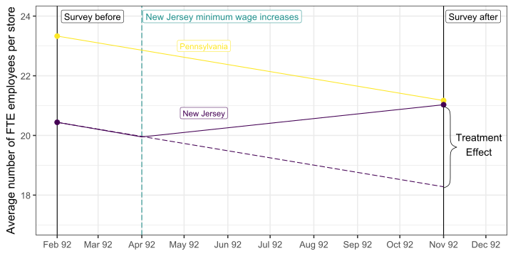만약 단순한 사후/사전 비교를 했다면 어떻게 되었을까?
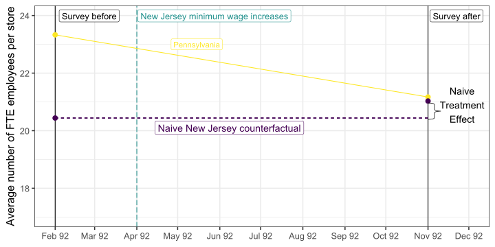만약 단순한 사후/사전 비교를 했다면 어떻게 되었을까?
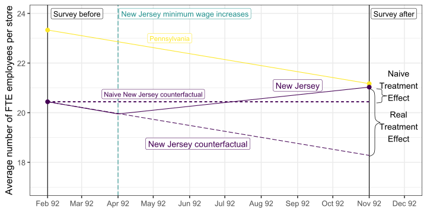만약 단순한 사후/사전 비교를 했다면 어떻게 되었을까?
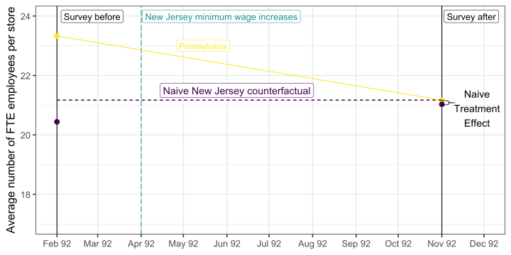만약 단순한 사후/사전 비교를 했다면 어떻게 되었을까?
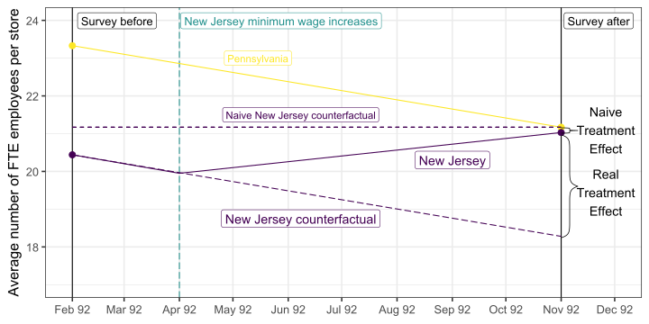Estimation
회귀 분석을 통한 DiD
실제 분석에서는, DiD는 보통 단 2개의 시점(4개의 관측치)보다 더 많은 기간을 포함하여 추정됨.
정책 변화 전후로 더 많은 데이터가 존재하는 경우가 많음.
DiD 회귀 분석의 3가지 핵심 요소
처치 더미 변수 (Treatment Dummy Variable): \(TREAT_s\) (첨자 \(s\)는 처치가 주(state) 수준에서 이루어짐을 나타냄)
정책 시행 이후 기간을 나타내는 더미 변수 (Post-Treatment Periods Dummy Variable): \(POST_t\) (첨자 \(t\)는 이 변수가 시간에 따라 변화함을 나타냄)
두 변수의 상호작용항 (Interaction Term): \(TREAT_s \times POST_t\) 👉 이 항의 계수가 바로 DiD 인과 효과를 의미함!
회귀 분석을 통한 DiD
처치 더미 변수 (Treatment Dummy Variable): \[ TREAT_s = \begin{cases} 0 \quad \text{if } s = \text{Pennsylvania} \\ 1 \quad \text{if } s = \text{New Jersey} \end{cases} \]
정책 시행 이후 기간을 나타내는 더미 변수 (Post-Treatment Periods Dummy Variable): \[ POST_t = \begin{cases} 0 \quad \text{if } t < \text{April 1, 1992} \\ 1 \quad \text{if } t \geq \text{April 1, 1992} \end{cases} \]
두 변수의 상호작용항 (Interaction Term): \(TREAT_s \times POST_t\) 👉 이 항의 계수가 바로 DiD 인과 효과를 의미함!
어떤 관측치에서 \(TREAT_s \times POST_t = 1\)이 되는가?
위 요소들을 모두 결합하면 다음과 같은 DiD 회귀식을 얻음: \[ EMP_{st} = \alpha + \beta TREAT_s + \gamma POST_t + \delta(TREAT_s \times POST_t) + \varepsilon_{st} \]
\(\delta\): 최저임금 인상이 고용에 미치는 인과적 효과
회귀 분석 이해하기
\[EMP_{st} = \color{#d96502}\alpha + \color{#027D83}\beta TREAT_s + \color{#02AB0D}\gamma POST_t + \color{#d90502}\delta(TREAT_s \times POST_t) + \varepsilon_{st}\]
주어진 조건에서 기대값:
\(\mathbb{E}(EMP_{st} \; | \; TREAT_s = 0, POST_t = 0) = \color{#d96502}\alpha\)
\(\mathbb{E}(EMP_{st} \; | \; TREAT_s = 0, POST_t = 1) = \color{#d96502}\alpha + \color{#02AB0D}\gamma\)
\(\mathbb{E}(EMP_{st} \; | \; TREAT_s = 1, POST_t = 0) = \color{#d96502}\alpha + \color{#027D83}\beta\)
\(\mathbb{E}(EMP_{st} \; | \; TREAT_s = 1, POST_t = 1) = \color{#d96502}\alpha + \color{#027D83}\beta + \color{#02AB0D}\gamma + \color{#d90502}\delta\)
DiD 계산 과정
\[[\mathbb{E}(EMP_{st} \; | \; TREAT_s = 1, POST_t = 1)-\mathbb{E}(EMP_{st} \; | \; TREAT_s = 1, POST_t = 0)] - \\ [\mathbb{E}(EMP_{st} \; | \; TREAT_s = 0, POST_t = 1)-\mathbb{E}(EMP_{st} \; | \; TREAT_s = 0, POST_t = 0)] = \color{#d90502}\delta\]
회귀 분석 이해하기
\[EMP_{st} = \color{#d96502}\alpha + \color{#027D83}\beta TREAT_s + \color{#02AB0D}\gamma POST_t + \color{#d90502}\delta(TREAT_s \times POST_t) + \varepsilon_{st}\]
표 형식으로 정리:
| 사전 평균 | 사후 평균 | 변화 (사후 - 사전) | |
|---|---|---|---|
| 펜실베이니아 (PA) | \(\color{#d96502}\alpha\) | \(\color{#d96502}\alpha + \color{#02AB0D}\gamma\) | \(\color{#02AB0D}\gamma\) |
| 뉴저지 (NJ) | \(\color{#d96502}\alpha + \color{#027D83}\beta\) | \(\color{#d96502}\alpha + \color{#027D83}\beta + \color{#02AB0D}\gamma + \color{#d90502}\delta\) | \(\color{#02AB0D}\gamma + \color{#d90502}\delta\) |
| 변화 (NJ - PA) | \(\color{#027D83}\beta\) | \(\color{#027D83}\beta + \color{#d90502}\delta\) | \(\color{#d90502}\delta\) |
- 이 표는 펜실베이니아를 대조군(Control)으로, 뉴저지를 처치군(Treatment)으로 대체하여 일반적인 설정으로 확장할 수 있음.
Task 2
10:00 더미 변수
treat를 생성하라.state가 펜실베이니아이면FALSE, 뉴저지이면TRUE로 설정하라.더미 변수
post를 생성하라.observation이 1992년 2월이면FALSE, 그 외의 경우TRUE로 설정하라.다음 회귀 모형을 추정하라. 슬라이드 9의 결과와 동일한 결과를 얻는가?
\[empfte_{st} = \alpha + \beta treat_s + \gamma post_t + \delta(treat_s \times post_t) + \varepsilon_{st}\]
Identifying Assumptions
DiD의 핵심 가정: 평행 추세 (Parallel Trends)
공통 또는 평행 추세 가정: 최저임금이 인상되지 않았다면, 펜실베이니아의 패스트푸드 고용 추세는 뉴저지에서 기대할 수 있었던 추세와 같아야 함.
이 가정은 1992년 2월부터 11월까지 펜실베이니아의 패스트푸드 고용 추세가 뉴저지의 반사실적(counterfactual) 고용 추세를 신뢰할 수 있는 기준으로 제공해야 함을 의미함.
이 가정을 완전히 검증하거나 기각하는 것은 불가능함.
직관적인 확인 방법: 정책 변화 이전의 추세를 비교해보고, 중기적 효과가 없을 것으로 예상될 경우 정책 변화 이후의 추세도 비교해볼 수 있음.
평행 추세: 눈으로 확인
평행 추세 가정을 확인하는 방법
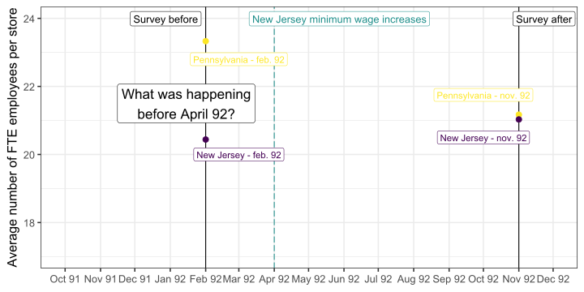평행 추세 가정을 확인하는 방법
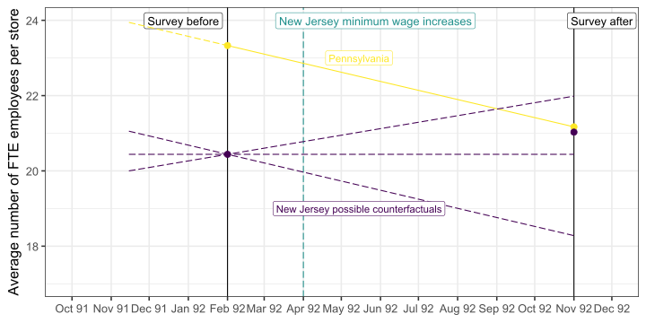평행 추세 가정 ⟶ 검증됨 ✅
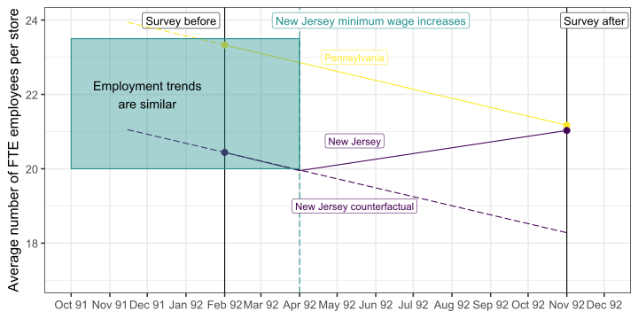평행 추세 가정 ⟶ 검증됨 ✅
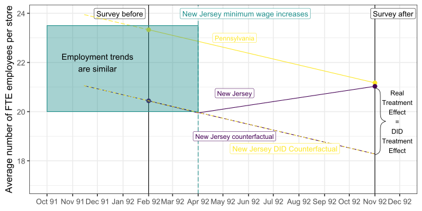평행 추세 가정 ⟶ 검증되지 않음 ❌
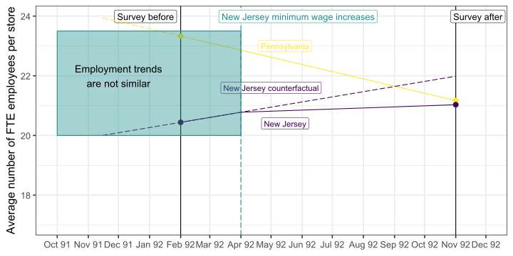평행 추세 가정 ⟶ 검증되지 않음 ❌

평행 추세 가정: Card and Krueger (2000)
펜실베이니아와 뉴저지의 실제 고용 추세를 살펴보자.
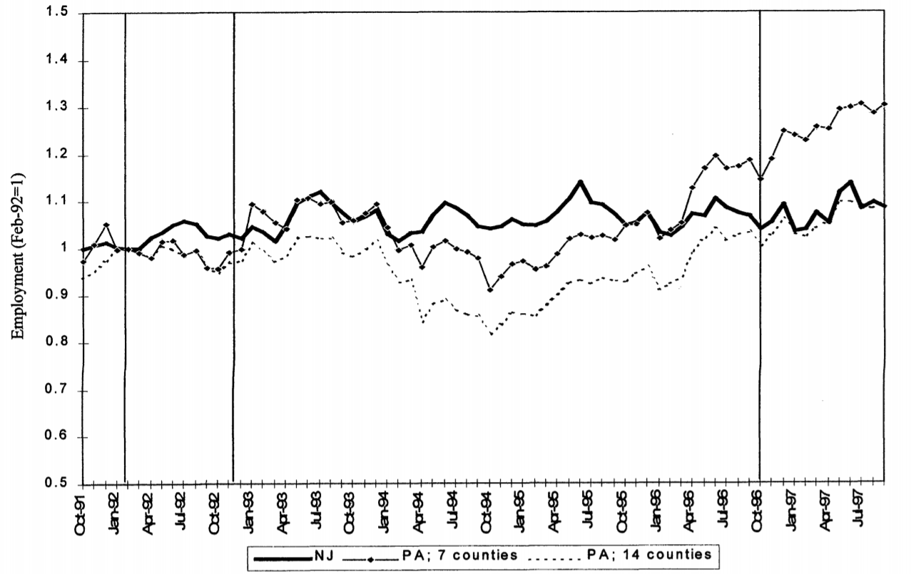- 공통 추세 가정이 검증될 가능성이 높은가?
평행 추세 가정: 공식적 정의
다음과 같이 정의하자:
\(Y_{ist}^1\): 시점 \(t\)에서 주(state) \(s\)의 식당 \(i\)에서 높은 최저임금이 적용될 경우 패스트푸드 고용 수준
\(Y_{ist}^0\): 시점 \(t\)에서 주(state) \(s\)의 식당 \(i\)에서 낮은 최저임금이 적용될 경우 패스트푸드 고용 수준
이는 잠재적 결과(Potential Outcomes)이며, 두 개 중 하나만 관찰할 수 있음.
DiD 추정의 핵심 가정은, 처치(treatment)가 없을 경우 식당 \(i\)의 결과가 다음과 같이 주어진다는 것임:
\[\mathbb{E}[Y_{ist}^0|s,t] = \gamma_s + \lambda_t\]
이 가정은 두 가지 암묵적 가정을 포함함:
- 선택 편향 (Selection Bias): 고정된 주(state) 특성 \((\gamma)\)과 관련됨.
- 시간 추세 (Time Trend): 처치군과 대조군이 동일한 시간 추세 \((\lambda)\)를 가짐.
평행 추세 가정: 공식적 정의
비교 그룹에서의 결과:
\[\mathbb{E}[Y_{ist}| s = \text{Pennsylvania},t = \text{Feb}] = \gamma_{PA} + \lambda_{Feb}\]
\[\mathbb{E}[Y_{ist}|s = \text{Pennsylvania},t = \text{Nov}] = \gamma_{PA} + \lambda_{Nov}\]
\[ \begin{align} \mathbb{E}[Y_{ist}&|s = \text{Pennsylvania},t = \text{Nov}] - \mathbb{E}[Y_{ist}| s = \text{Pennsylvania},t = \text{Feb}] \\ &= \gamma_{PA} + \lambda_{Nov} - (\gamma_{PA} + \lambda_{Feb}) \\ &= \lambda_{Nov} - \lambda_{Feb} \end{align} \]
평행 추세 가정: 공식적 정의
비교 그룹에서의 결과:
\[\mathbb{E}[Y_{ist}| s = \text{Pennsylvania},t = \text{Feb}] = \gamma_{PA} + \lambda_{Feb}\]
\[\mathbb{E}[Y_{ist}|s = \text{Pennsylvania},t = \text{Nov}] = \gamma_{PA} + \lambda_{Nov}\]
\[ \begin{align} \mathbb{E}[Y_{ist}&|s = \text{Pennsylvania},t = \text{Nov}] - \mathbb{E}[Y_{ist}| s = \text{Pennsylvania},t = \text{Feb}] \\ &= \gamma_{PA} + \lambda_{Nov} - (\gamma_{PA} + \lambda_{Feb}) \\ &= \underbrace{\lambda_{Nov} - \lambda_{Feb}}_{\text{시간 추세 (time trend)}} \end{align} \]
\(\rightarrow\) 비교 그룹을 이용하여 시간 추세 (time trend)를 추정할 수 있음.
평행 추세 가정: 공식적 정의
비교 그룹에서의 결과:
\[\mathbb{E}[Y_{ist}| s = \text{Pennsylvania},t = \text{Feb}] = \gamma_{PA} + \lambda_{Feb}\]
\[\mathbb{E}[Y_{ist}|s = \text{Pennsylvania},t = \text{Nov}] = \gamma_{PA} + \lambda_{Nov}\]
\[ \begin{align} \mathbb{E}[Y_{ist}&|s = \text{Pennsylvania},t = \text{Nov}] - \mathbb{E}[Y_{ist}| s = \text{Pennsylvania},t = \text{Feb}] \\ &= \gamma_{PA} + \lambda_{Nov} - (\gamma_{PA} + \lambda_{Feb}) \\ &= \underbrace{\lambda_{Nov} - \lambda_{Feb}}_{\text{시간 추세 (time trend)}} \end{align} \]
\(\rightarrow\) 비교 그룹을 이용하여 시간 추세 (time trend)를 추정할 수 있음.
평행 추세 가정: 처치군의 결과
최저임금 인상의 진짜 효과(true impact)를 \(\delta\)라고 하자:
\[\mathbb{E}[Y_{ist}^1 - Y_{ist}^0|s,t] = \delta\]
처치군에서의 결과:
\[\mathbb{E}[Y_{ist}|s = \text{New Jersey}, t = \text{Feb}] = \gamma_{NJ} + \lambda_{Feb}\]
\[\mathbb{E}[Y_{ist}|s = \text{New Jersey}, t = \text{Nov}] = \gamma_{NJ} + \delta + \lambda_{Nov}\]
\[ \begin{align} \mathbb{E}[Y_{ist}&|s = \text{New Jersey}, t = \text{Nov}] - \mathbb{E}[Y_{ist}|s = \text{New Jersey}, t = \text{Feb}] \\ &= \gamma_{NJ} + \delta + \lambda_{Nov} - (\gamma_{NJ} + \lambda_{Feb}) \\ &= \delta + \underbrace{\lambda_{Nov} - \lambda_{Feb}}_{\text{시간 추세 (time trend)}} \end{align} \]
평행 추세 가정: 최종 도출
결과적으로:
\[ \begin{align} \mathbb{E}[Y_{ist}&|s = \text{PA},t = \text{Nov}] - \mathbb{E}[Y_{ist}| s = \text{PA},t = \text{Feb}] = \underbrace{\lambda_{Nov} - \lambda_{Feb}}_{\text{시간 추세 (time trend)}} \end{align} \]
\[ \begin{align} \mathbb{E}[Y_{ist}&|s = \text{NJ},t = \text{Nov}] - \mathbb{E}[Y_{ist}| s = \text{NJ},t = \text{Feb}] = \delta + \underbrace{\lambda_{Nov} - \lambda_{Feb}}_{\text{시간 추세 (time trend)}} \end{align} \]
\[ \begin{align} DD &= \mathbb{E}[Y_{ist}|s = \text{NJ}, t = \text{Nov}] - \mathbb{E}[Y_{ist}|s = \text{NJ}, t = \text{Feb}] \\ & \qquad \qquad - \Big(\mathbb{E}[Y_{ist}|s = \text{PA},t = \text{Nov}] - \mathbb{E}[Y_{ist}| s = \text{PA},t = \text{Feb}]\Big) \\ &= \delta + \lambda_{Nov} - \lambda_{Feb} - (\lambda_{Nov} - \lambda_{Feb}) \\ &= \delta \end{align} \]
🔍 인과 관계를 찾아가는 길
✅ 데이터를 어떻게 다룰까?: 읽기(Read), 정리(Tidy), 시각화(Visualize)…
✅ 변수간 관계를 어떻게 요약할까? 단순 / 다중 선형 회귀…비선형회귀, 교차변수…
✅ 인과 관계(Causality)란 무엇인가?
✅ 전체 모집단을 관측하지 못하면 어떻게 할까? Sampling!
✅ 우리의 연구 결과가 단순한 무작위(Randomness) 때문일 수도 있을까? 신뢰구간과 가설검정. 통계적 추론
🚧 실제로 외생성을 어떻게 찾아낼 수 있을까?: 이중 차분
THE END!